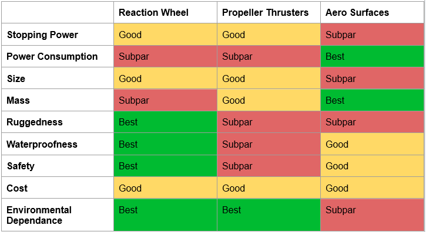

Selecting our Solution
Oct 2, 2023
Greetings SpinStop followers,
The moment of truth has arrived. With our four potential solutions laid out on the table, it was time to sift through the possibilities and make a decision that would shape the future of SpinStop.
Our research into each solution went beyond the theoretical. We delved into the nitty-gritty details, considering how each idea measured up against our set constraints and criteria. The challenge was not just finding a solution but finding the optimal one that would stand up to the rigorous standards we set.
Enter the decision matrix—a tool that became our compass in the sea of options. It helped us quantify and evaluate each solution objectively, weighing factors against our constraints and criteria. This wasn't just a guessing game; it was a calculated, data-driven approach to ensure our decision aligned with the very essence of SpinStop.

After careful consideration and numerous discussions, we landed on the optimal solution that not only met but exceeded our expectations. The chosen path aligns seamlessly with our vision of creating a device that not only stops the uncontrollable spin of hoisted helicopter rescue payloads but does so with efficiency, innovation, and practicality.
In the next posts, we'll pull back the curtain on the decision-making process, sharing insights into why our chosen solution emerged as the frontrunner for SpinStop. The journey continues, and we're thrilled to have you on board!